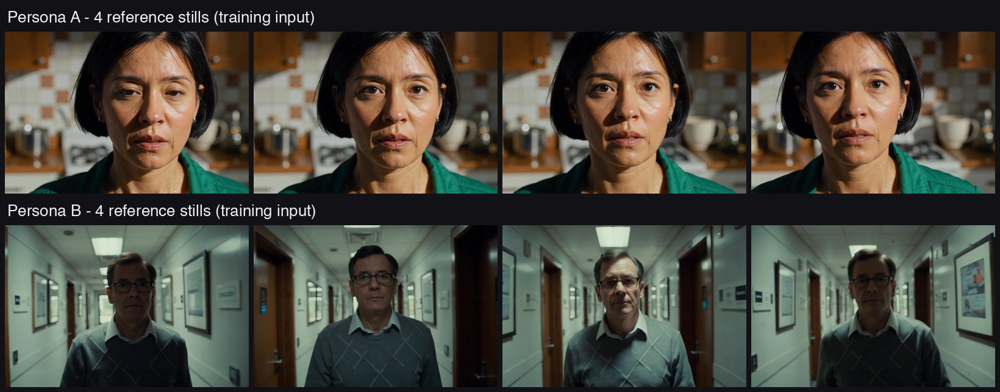
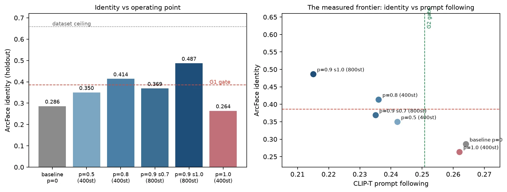
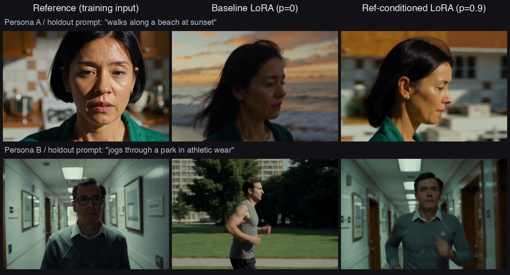
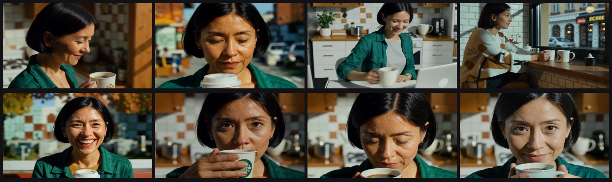

학습 입력 — 합성 인물 레퍼런스 스틸
생성 클립 1개 → 스틸 6장 → I2V로 인물당 8클립을 만든 합성 데이터셋. 레퍼런스 스틸을 VAE latent로 인코딩해 denoising 시퀀스 앞에 노이즈 없이 고정(frozen, loss 제외)하고, 매 샘플을 확률 p로만 조건화합니다(나머지는 일반 학습).
Reference-Conditioned Video LoRA · On-prem GPU
상용 트레이너(MiniMax H3 Ref2VA)가 API 뒤에 감춰 둔 subject 일관성 학습 레시피를 오픈 가중치 Wan2.2 T2V A14B(MoE DiT)에 이식해, 데이터셋 생성부터 LoRA 학습·측정· 추론·광고 제작까지 전 과정을 사내 GPU에서 닫았습니다. 아래는 그 실제 산출물입니다 — identity는 70% 올랐고, 무엇을 내줬는지까지 곡선으로 공개합니다.
A commercial reference-conditioned training recipe ported onto open-weight Wan2.2 (MoE DiT) and measured end-to-end on in-house GPUs: dataset synthesis, LoRA training, pre-registered evaluation gates, inference operating points, and a finished 43-second ad film. Identity +70%, with the trade-off curve published honestly.
ref2va-video-lora-lab,
private)에 아카이브했고, 방법과 측정은
·
두 편으로 공개되어 있습니다.

생성 클립 1개 → 스틸 6장 → I2V로 인물당 8클립을 만든 합성 데이터셋. 레퍼런스 스틸을 VAE latent로 인코딩해 denoising 시퀀스 앞에 노이즈 없이 고정(frozen, loss 제외)하고, 매 샘플을 확률 p로만 조건화합니다(나머지는 일반 학습).
① Diffusers Wan은 per-frame이 아니라 per-token (frame-major) timestep을 받는다 — 틀리면 조용히 broadcast로 강등. ② bf16 체크포인트에서도 time_embedder·norm은 fp32 유지(일괄 캐스팅 금지). ③ MoE 라우팅은 스텝 단위라 레퍼런스 anchor t=0.999는 라우팅을 안 바꾸고 임베딩 태그로만 작동. 셋 다 실제 config 클래스를 축소 인스턴스화한 스모크가 GPU를 쓰기 전에 잡았습니다.

G1 통과: identity 0.286 → 0.487(+70%, 기준의 2배). G2 미충족: CLIP-T −11~19% — 어느 운용점에서도 못 닫았고 그대로 보고합니다. p 스윕에서 p=1.0(전량 조건화)은 오히려 identity 붕괴 — 원 레시피가 남겨 둔 10% 무조건 학습이 결합 성립의 전제임을 실측으로 확인.
| 지표 | 베이스라인 | 조건화 (p=0.9) |
|---|---|---|
| identity (ArcFace mean) | 0.286 | 0.487 (+70%) |
| 프레임별 최악값 | −0.081 (인물 상실) | +0.008 |
| 프롬프트 추종 (CLIP-T) | 0.264 | 0.215 (−11~19%) |
identity 피크는 p=0.8~0.9. 추론에서 어댑터 강도를 1.0→0.7로 낮추면 추종이 일부 돌아오지만 identity도 함께 내려갑니다 — 전선 위를 이동할 뿐 전선을 벗어나지 못합니다.

베이스라인은 프롬프트(해변·공원)는 잘 따르지만 얼굴이 다른 사람이 되고, 조건화 모델은 얼굴을 지키는 대신 배경이 학습 데이터 쪽으로 끌립니다. 트레이드오프가 이 한 장에 그대로 있습니다.
조건화 모델은 컷 내내 같은 인물을 유지합니다. 학습을 마친 어댑터는 추론 때 레퍼런스 이미지가 필요 없어, 대량 생산 파이프라인에서 클립마다 레퍼런스 자산을 관리하는 오버헤드가 사라집니다.
데이터 천장(자기유사도 0.606)이 낮은 인물 B에서도 같은 방향의 개선 — per-persona 0.168 → 0.449.
아침 주방 → 도시 거리 → 사무실 → 카페 → 공원 → 루프탑 → 클로즈업, 8샷 전부에서 같은 인물이 유지됩니다. 샷마다 어댑터 강도 1.0 (얼굴이 전부인 샷)과 0.7(장소가 말하는 샷)을 생성해 좋은 쪽을 골랐습니다(1.0 다섯 · 0.7 셋). 사람 손이 들어간 곳은 샷 리스트와 샷별 선택, 딱 두 군데입니다.

측정에서 비용이던 것이 연출에서 자산이 되는 순간도 있었습니다 — 강도 1.0의 "학습 데이터 초록 셔츠가 계속 따라오는" 추종 하락이, 광고 문맥에서는 브랜드 유니폼 같은 일관성으로 읽힙니다.
1 · 레시피는 identity 약속을 지켰다. 16클립 규모 합성 데이터셋에서 identity +70%(사전등록 게이트의 2배), 프레임별 최악값이 마이너스에서 플러스로 — 인물을 아예 놓치는 구간이 사라졌습니다.
2 · 공짜가 아니다 — 비용은 곡선으로 공개. 프롬프트 추종 −11~19%는 어느 운용점에서도 못 닫았습니다. 어댑터 강도는 전선 위의 이동일 뿐이라, 용도별 운용점 선택 (클로즈업 1.0 / 장소 샷 0.7)이 현재 시점의 실전 요령입니다.
3 · 전 과정이 데이터 주권 안에서 닫혔다. 데이터셋 생성(합성 인물 I2V) → 학습(MoE 이식 계약 포함) → 평가(ArcFace·CLIP-T 게이트) → 광고 제작까지 외부 API 0회, 전부 자체 GPU 클러스터 잡으로 실행. 학습을 마친 어댑터는 추론 때 레퍼런스가 필요 없습니다.